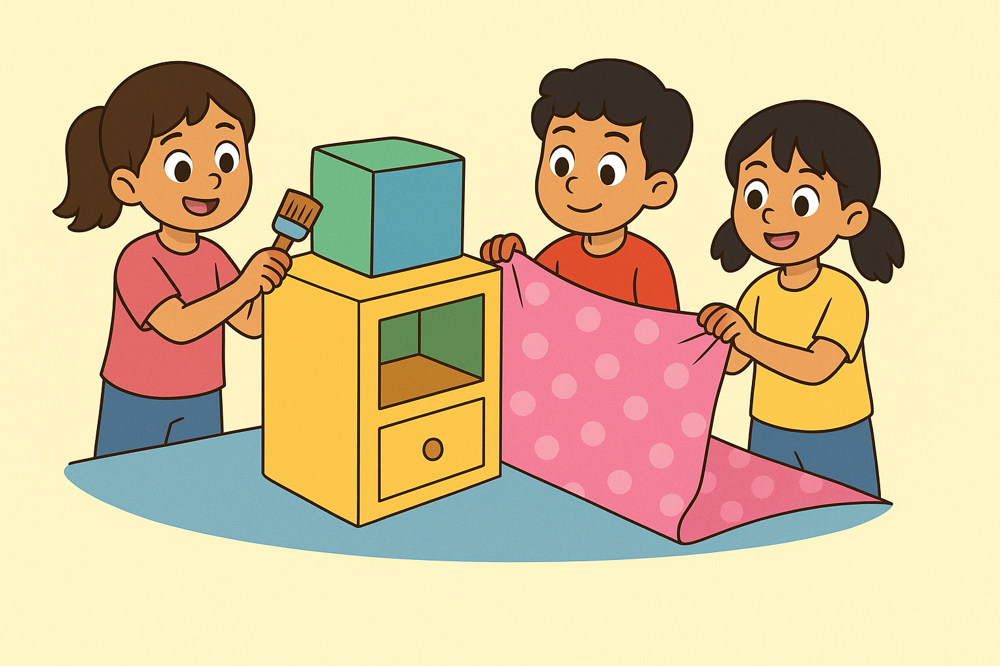

📦 Ayo Mengamati Kubus dan Balok 📦
Anak-anak, "Mari kita amati benda-benda yang berbentuk kubus dan balok di sekitar kita. Perhatikan sisi-sisi yang rata dan sudut yang tepat!"

Perhatikan gambar dibawah ini!
Pernahkah kalian membantu Ayah atau Ibu membungkus kado atau mengecat kotak mainan?
Nah, saat kita mengecat, kita harus tahu seberapa luas permukaan yang akan dicat, supaya catnya cukup.
Sekarang bayangkan, kalian membuat lemari mainan yang terdiri dari balok di bawah dan kubus di atasnya.
Kalau lemari itu mau dibungkus kertas kado, kira-kira berapa luas kertas yang dibutuhkan?
Hari ini kita akan belajar tentang luas gabungan bangun ruang kubus dan balok, agar kita bisa menghitung luas permukaan dari benda-benda seperti itu dengan tepat!